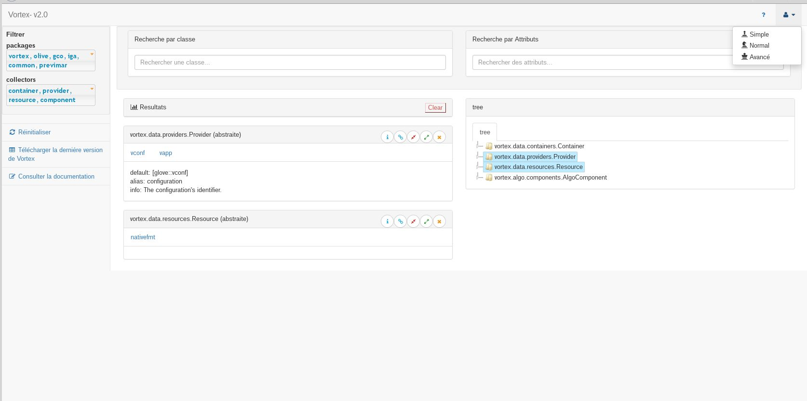
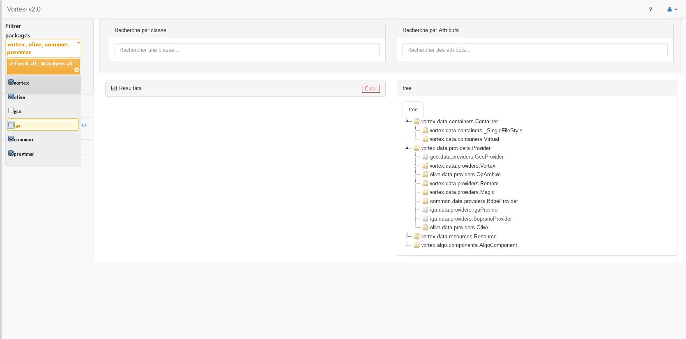
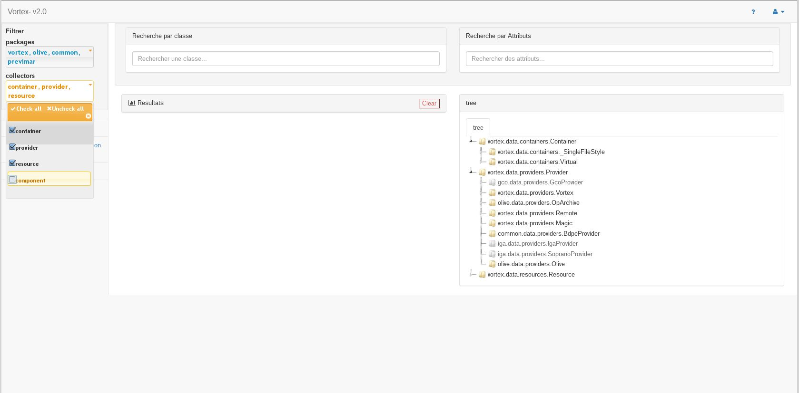
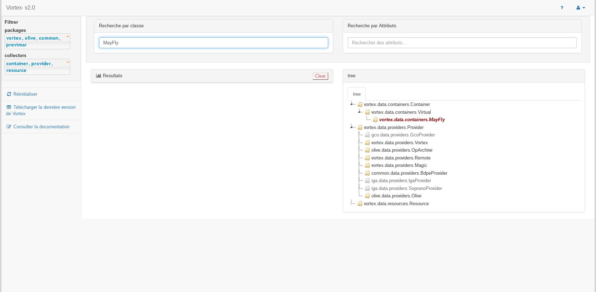
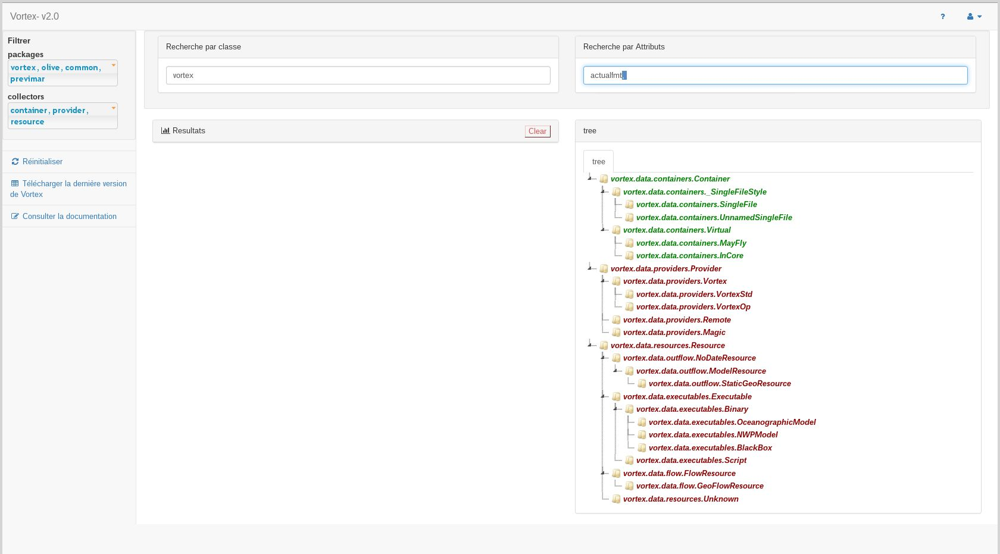
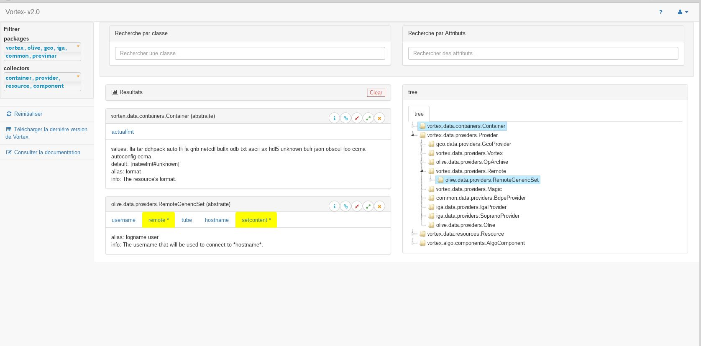
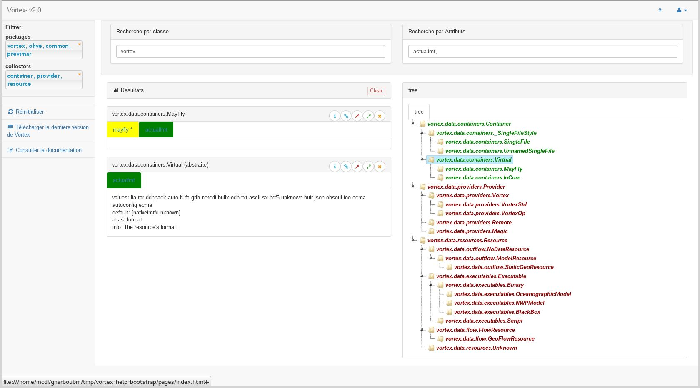

'interface den l'aide vortex fonctionne suivant trois modes d'utilisateur : simple, normal, avancé
par défaut l'utilisateur est en mode simple par défaut mais il peut le changer
l'image suivante montre comment un utilisateur peut changer le mode de fonctionnement
le filtrage par package consiste à activer ou désactiver un package de classes pour optimiser la recherche et réduire la liste des classes résultats qui apparaissent dans l'arbre
par défaut tous les packages sont sélectionnés après l'utilisateur peut choisir l'ensemble des packages qui convient sa recherche.
le filtrage par collecteur permet à l'utilisateur d'enlever ou ajouter l'ensemble des classes qui correspond au collecteur sélectionné
par défaut toutes les collecteurs sont sélectionnés, après l'utilisateur peut supprimer les classes d'un collecteur en décochant ce dernier
cette boîte de recherche agit dynamiquement dans sur l'arbre. En effet il suffit de taper un mot-clé pour voir instantanément l'ensemble des classes qui contiennent ce mot-clé dans l'arbre en rouge et en gras.
la construction de cette boîte de recherche vient de deux possibilités la première hypothèse c'est que l'utilisateur veut encore spécifier la recherche C'est-à-dire que l'utilisateur veut encore filtrer les résultats en éliminant les classes qui ne contiennent pas l'ensemble des attributs taper dans cette boîte la deuxième hypothèse c'est que l'utilisateur ne connaît pas le nom de la classe mais il connaît les attributs de cette classe dans ce cas l'utilisateur pourra directement taper l'ensemble des attributs recherché pour voir les résultats dans l'arbre.
l'arbre des classes est un moyen qui permet de voir les relations d'héritage entre les classes ainsi les résultats de la recherche seront affiché au niveau de l'arbre ce qui permet d'avoir des informations sur la classe (l'héritage, le package...)
l'arbre aussi est un moyen utiler pour afficher les tableaux qui contiennent les informations sur la classe, il suffise sélectionnée une classe dans l'arbre pour voir le tableau de résultats à coté de l'arbre.
Les informations sur la classe s'affichent sous forme un tableau qui contient le nom de la classe et à côté le type de la classe (abstraite ou pas). l'ensemble des attributs de la classe et les informations sur chaque attribut.le tableau contient aussi quatre boutons:
1/un boutton de suppression qui permet de supprimer le tableau et l'enlever de l'ensemble de résultats.
2/un boutton qui permet de masquer les attributs de la classe.
3/un boutton qui permet d'afficher les attributs au cas ils sont masqués.
4/un boutton qui envoie qui redirige l'utilisateur vers la documentation sphinx sur la classe.
